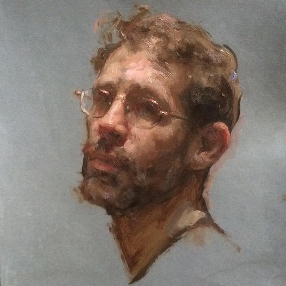

Ezequiel de Sousa Escobar
Nome completo: Ezequiel de Sousa Escobar.
Referido principalmente: Escobar.
Idade: Era três anos mais velho que Bentinho, tendo aproximadamente 18 quando se conheceram.
Cônjuge: Sancha Gurgel.
Personalidade: Modos furtivos, notável polidez e educação, aptidão a lógica numérica e
matemática.
Formação: Comerciante
Gostos e preferências: Gosto pelo comércio e negociação, adorava nadar.
Caro Santiago,
Creio que, caso esteja em posse desta carta, significa que os deixei.Tu receberás apenas este
esmurrado pedaço de papel, entalhado com a tinta que compõe as palavras que escrevo-lhe; tu já és um
homem abastado, Bentinho, tive de pensar em minha esposa e filha, espero que entendas, confesso,
porém, que me custa acreditar que tais futilidades estão ocupando muito espaço em seus pensamentos agora.
Bem sabes o que penso a respeito da escrita, a natureza lógica dos números agradam-me deverasmente
mais; entretanto, senti a necessidade de criar registro acerca do que penso e sinto a seu respeito.
Perdoe-me por eventuais trapalhices, ou inconsistência nas palavras que virão a seguir.
Comecemos pela notável época em que nos conhecemos, dentre os seminaristas, demos nos bem assim que nossos caminhos se cruzaram, não é mesmo, meu caro? Lembro-me de ti como o garoto obstinado, querido por todos e que repudiava a idéia da ordenação; não entendi prontamente o motivo de tal aversão, tu sempre pareceu-me religioso e emotivo o bastante para a vida paroquial, fiquei a par das razões no decorrer dos meses. Também eu tive meus motivos para não tornar-me padre; Capitu era sua paixão, a minha foi o comércio; gradativamente, a razão de minha afeição tomou a forma de minha estimada esposa, mas sinto que estou adiantando-me, seguirei de forma linear a partir daqui.
Durante nossos anos no seminário, fostes meu melhor amigo e confidente, desejo que saiba o quanto guardei em mim de nossa amizade. Fizeste me bem, lembro-me ainda hoje de visitar a sua casa na Rua de Matacavalos, dos jantares, de nossas inesgotáveis conversas, de seus familiares, que me são muito benquistos; mormente sua zelosa mãe, cuja bondade assemelhava-se somente a de minha defunta irmã. Temo ter sido prolixo durante todas estas últimas linhas apenas para dizer-lhe que sentia-me mais bem acolhido em sua família e sua casa do que dentre minha própria; creio que lhe devo minha gratidão por isso também.
Veio então, nossa despedida do seminário. Gosto de acreditar que fui um elemento de suma importância para sua saída. Verdade seja dita, não me recordo inteiramente de como pensei em lhe sugerir que tua mãe mandasse outro para o seminário em seu lugar. Pareceu-me uma solução adequada, meu espírito e mente proveram-me de um senso de simplicidade para um problema tão complexo, creio que este fenômeno esteve conectado diretamente com minha pouca idade e os maneirismos que a acompanharam.
Desnecessário dizer, meu caro, que os anos que se seguiram foram embebidos em juventude, o estreitamento ainda mais próximo de nossos laços, se porventura fosse possível, seu casamento, meu casamento. Devo dizer que alegrou-me tremendamente conhecer sua adorável esposa, confesso que me afeiçoei a Capitu de tal modo que passei a considerá-la muito, gostaria que ela soubesse disso, caso venha a ler esse amontoado de adeuses um dia. Sendo sincero, amigo, não reluto em dizer que foram os mais contentes tempos de toda minha existência, não me arrependi em momento algum das companhias com quem estive e da vida que levei; tenho agora, um único receio, no entanto. Espero que, quando a hora for apropriada, os anjos celestiais façam-me o precursor dos caminhos inexplorados por nós e abram-me os portões dos céus antes que um de vós tenha a chance de fazê-lo para mim.
Acredito que só me resta esclarecer o porquê escrevo-lhe esta carta neste momento. Receio não ter uma explicação grandiosa para o mesmo: com o nascimento de Capituzinha fez-se necessário incrementá-la em meu testamento, reavendo todas as ladainhas burocráticas me surgiram memórias antigas, das quais você protagoniza boa parte, portanto, esta soma simples de acontecimentos nos levou ao resultado dos parágrafos lidos acima pela sua ilustre pessoa. Creio que seja melhor concluir agora esses dizeres. Bentinho, nunca em toda minha existência eu me julguei merecedor de uma amizade tão significativa quanto a sua, sempre fizeste-me sentir como se pudéssemos compartilhar a alma um do outro; fui e ainda sou tremendamente feliz por conhecê-lo e por tê-lo tido durante todos esses anos. Gostaria de agradecer-lhe por ter me proporcionado tamanho carinho e peço que cuide das pessoas queridas por nós quando eu não puder mais, de si mesmo, inclusive.
Atenciosamente, Escobar
Carta trazida por: Ana Beatriz S. Chornobai